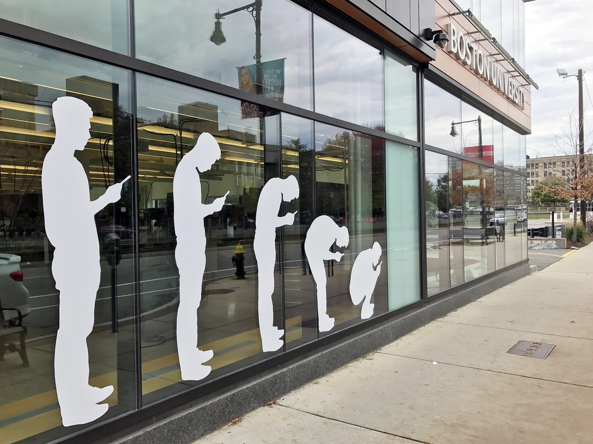

Modern Revolution
Installation

The life-size vinyl mural is a commentary on people's obsession over their smartphones nowadays. The installation suggests that humans are physically regressing background in evolution because of technology by resembling the iconic evolution imagery. The mural is temporarily installed at Boston University EPIC (Engineering Product Innovation Center) on its outside window near the front entrance, attracting heavy traffics from students and other pedestrians everyday. The irony of having it installed at a technology-focused building serves as a mean to encourage people to utilize this space and its technology to create and innovate rather than solely fixated on what is on the screen everyday.